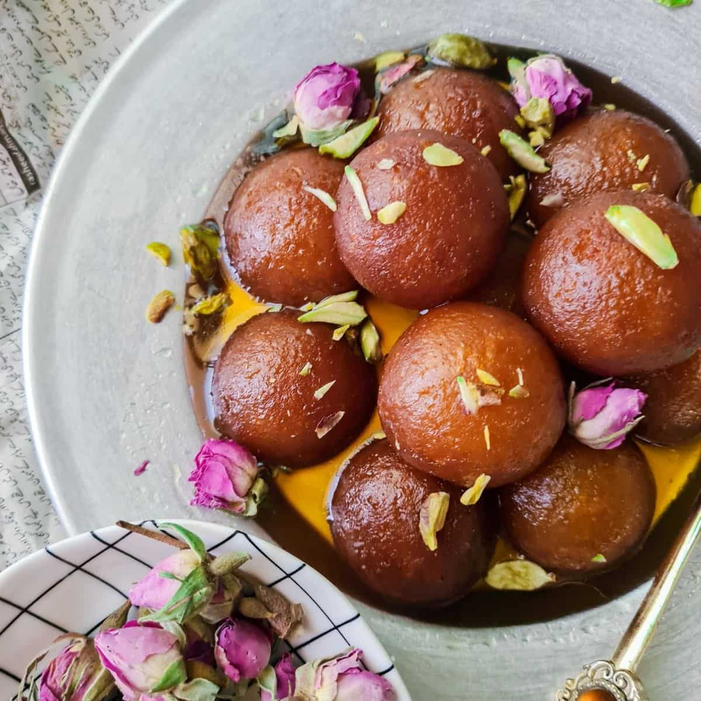

Back to main page
Gulab Jamun

About Gulab Jamun Recipe:
In this recipe, the classic aloo filling is replaced with fresh matar that is cooked in spices
Then small samosas are made and enjoyed. This quick and easy recipe can be made with just a few ingredients.
Ingredients of Gulab Jamun
- 8 Bread Slices
- 2 tbsp Malai/cream
- 1/3 cup Milk
- 1 tbsp Maida
- 1 cup Ghee/Neutral oil
- 1 cup Sugar
- 2-4 Cardamom Pods
- 6-8 Strands Kesar (Optional)
- 1 tsp Rose water (Optional)
How to Make Gulb Jamun
- Take bread slices and grind them to make fresh breadcrumbs.
- Add malai and milk powder to this and mash lightly.
- Now add milk in small batches and knead a soft dough.
- Make tiny dough balls out of this and keep aside on a plate.
- Heat ghee/neutral oil in a pan and fry the dough balls in batches.
- Lightly shallow fry until the balls are golden brown.
- While you are frying the dough balls, in another pan heat a cup of water.
- Add the sugar and stir until slightly thick, add crushed cardamom pods and Kesar strands.
- Let the sugar syrup come to a rolling boil then take off the heat.
- Now add the fried dough balls to the sugar syrup, serve hot or cold according to your preference.
Recipe Notes
For more recipe like this. Click here
Back to top of page